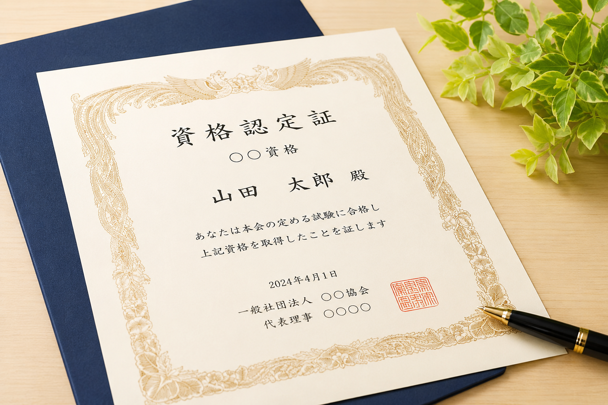

今後の目標
資格取得
今後の目標として自分が目指すことは資格取得です
高校生の頃では工業の情報化で入学していたのもあって取れる資格は取っておきたいのもありますが、これから就職活動での面接などに対して就職先に「この人はより優秀な人材になるだろう」と優先されることも可能性としてはあるので期待があると思います
また、就職後に使わることもあれば仮に転勤した際にこの資格を持っていれば有利になると言ったこれからの未来にでも約に立てると思い、今後の目標の一部となっています
分からないことがあったらしっかりと話す
自分でも今日受けた授業が分からなかったことがあります自分の性格が悪い所で分からなかった箇所を無理やり解きなおして曖昧な状態で学んでしまったり、結局分かってないまま終わってしまうことが自分の短所とも言える所です
その為に今現在分からないことは先生に聞いてみる、放課後残って聞いてみる、隣席の人に聞いてみるなど自分で改善できるように心掛けていきたいです。
今日学習したことを明日解けるようにする
その日学んだことを明日できるよう学校内で学んだだけじゃなく自宅で復習してみるなど、時間に余裕が無くても数分づつ取り組むなど目標にしたいです。これから過去問などの解く授業があるので自宅でも学習するよう用意いておきたいです
